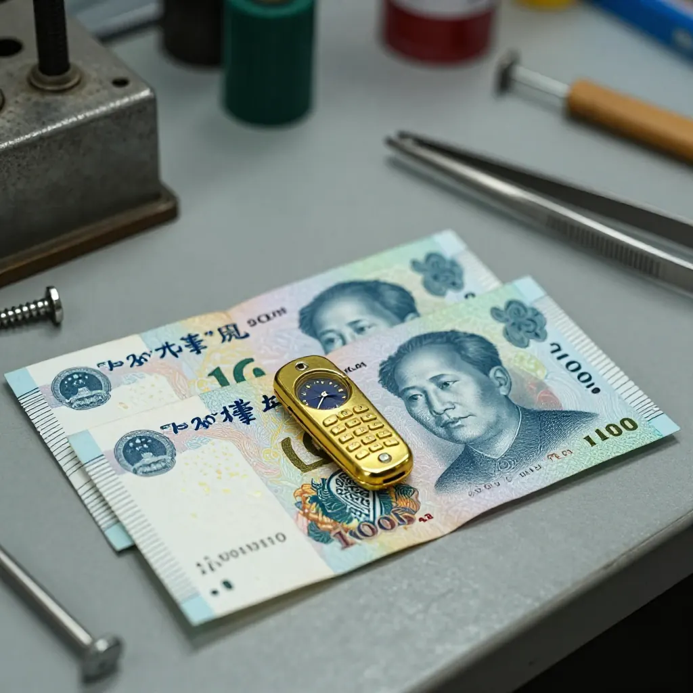
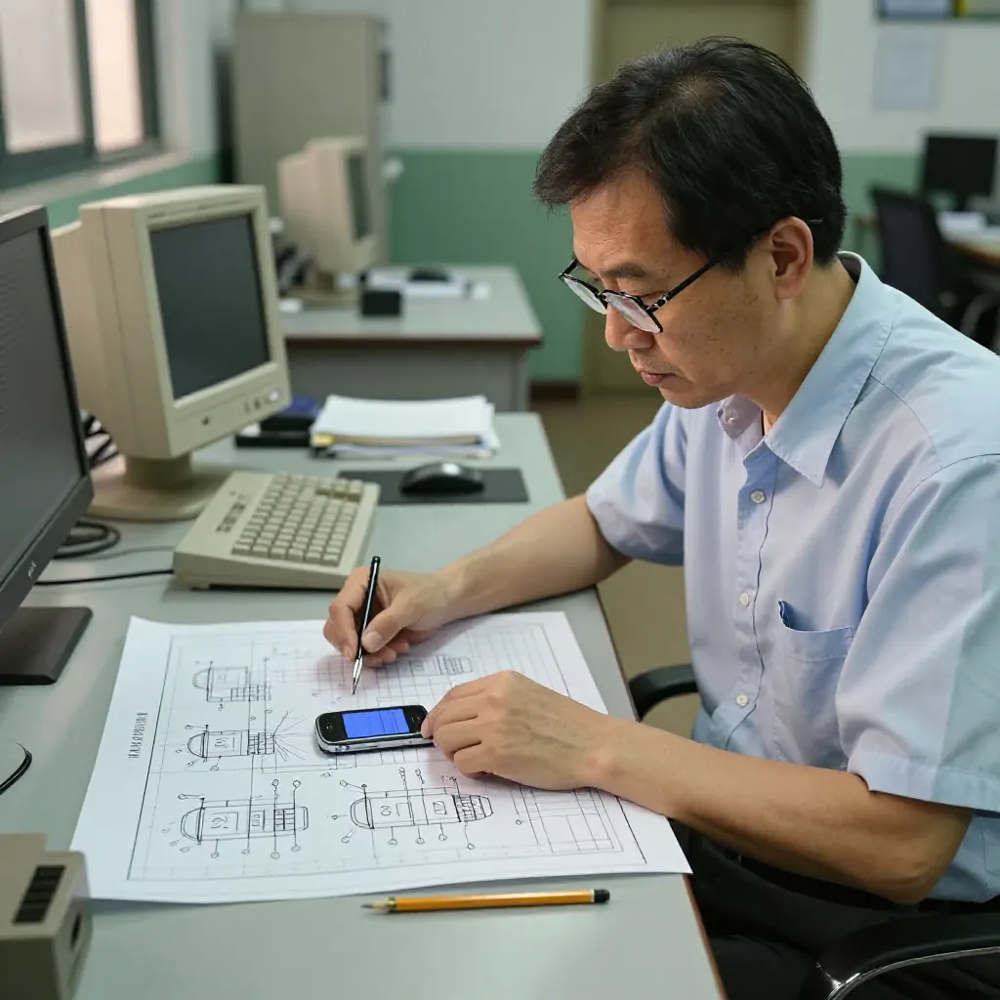
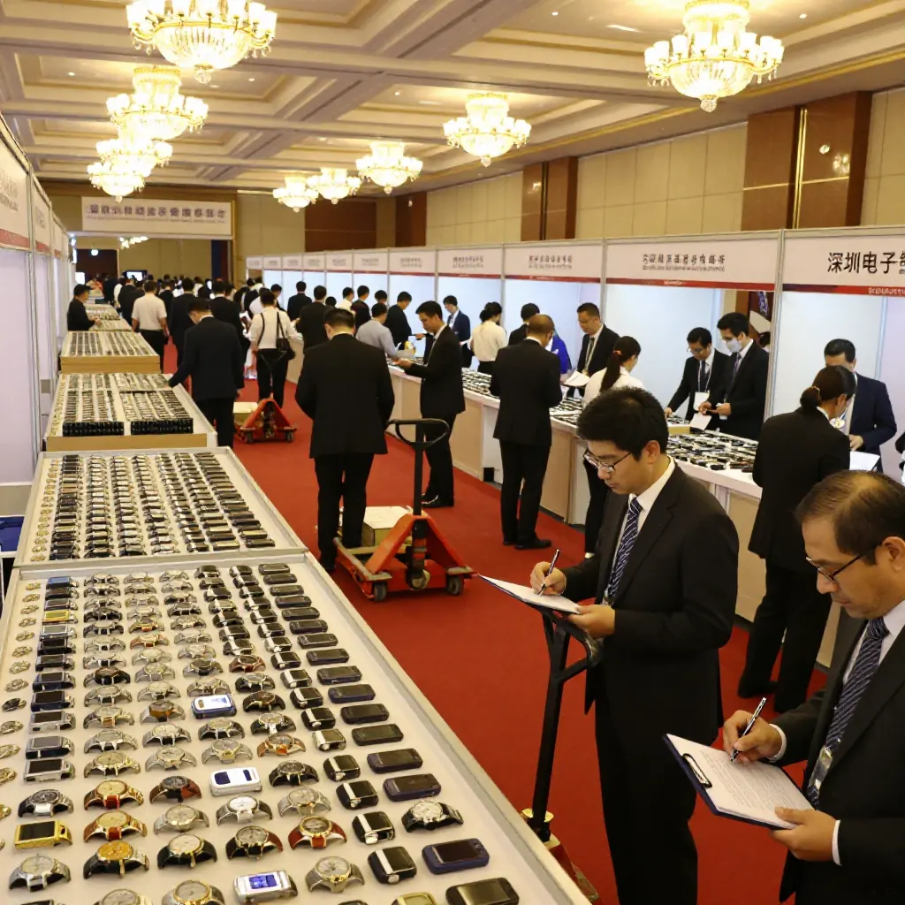
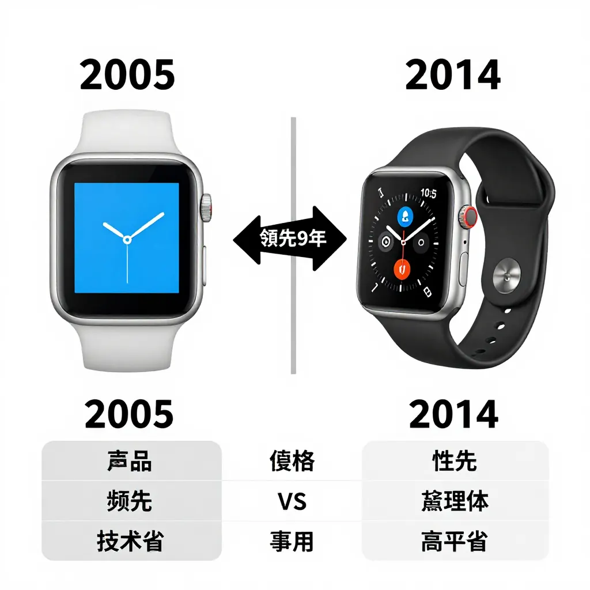

個客拎住件樣板過嚟，話：「保證俾你5000蚊，幫我把呢個概念做出來？」
我屌，5000蚊？開個模幾錢你知唔知？ 天方夜譚。佢個字仲要細到乜咁。
跟住佢飲茶，我靜咗。隔離有把聲：「老婆，呢個好喎。」
就係呢一句，我諗深一層——又真係得得哋㖞。
我同佢講：「得，5000蚊，你個專利賣俾我。嘢你留低，我幫你落地。」
但我做生意嘅，點會唔留後路？
我知呢個外國人實會即刻簽，我就同佢簽。錢收咗，但我話：「我先做500個樣板

因為我自己用佢入麵嘅技術，研究出另一款。我怕佢告我，所以要改到唔同。
結果？嗰5000蚊買嘅唔止係專利，係成個行業嘅入場券。
鄭哥補充
上麵呢段係當年嘅真事，但只係冰山一角。
其實個外國客畀我嘅「設計」，根本做唔出嚟。屏幕太細、電池太重、按鍵又密又細，戴喺手度好似綁咗塊磚。如果我真係照佢要求做，呢單嘢一定死。
所以我做咗三件事：
- 改設計 — 推翻佢成個外殼，屏幕大一倍、按鍵好撳、電池撐足兩日
- 改型號 — 外觀、結構、電路板佈局全部唔同，佢告我都告唔入
- 改市場 — 佢想做幾百個試水，我直接聯係歐美客，一次過出貨五千隻


嗰500個樣板我做得麻麻地，交完俾佢之後就冇再聯絡。

我做嘅嗰隻手錶手機，比 Apple Watch 早咗九年。
好多人以為做生意要讀好多書、識好多技術。我同你講，唔係。我當年唔識模具設計，唔識電路工程，但我識得兩樣嘢：識得問，識得改。
隔籬枱嗰對夫婦講「呢個好喎」，俾咗我信心——呢個市場真係存在。
5000蚊買個概念，值；但買完之後點用，先係真功夫。